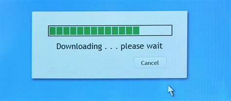

Internet
ADSL:
Ook wel: Asynchronic Digital Subscriber Line Afkorting voor Asymmetric Digital Subscriber Line, ADSL is een DSL communicatietechnologie die gebruikt wordt voor het verbinden met internet. Met ADSL kunnen meer gegevens worden verzonden over bestaande koperen telefoonlijnen (POTS), in vergelijking met traditionele modem lijnen. ADSL vereist een speciale ADSL-modem en een maximale afstand tussen huis en centrale van 2 tot 3 kilometer. ADSL ondersteund overdrachtssnelheden van 1,5 tot 9 Mbps bij het ontvangen van gegevens (beter bekend als downstream-snelheid) en 0,16-1 Mbps bij het verzenden van data (bekend als upstream snelheid).
FTTH:
Ook wel: Fiber to the home FTTH is de afkorting voor fiber-to-the-home (glasvezel tot je huis). Bij fiber to the home worden glasvezelverbindingen doorgetrokken vanuit de wijkcentrale tot direct bij abonnees thuis. Dit in tegenstelling tot glasvezelnetwerken waarbij alleen de centrales zijn verbonden door middel van glasvezelverbindingen en het laatste stukje tot aan de aansluiting bij de klant op andere wijze wordt ingevuld. Glasvezelkabel is een alternatief voor kabelnetwerken op basis van COAX (coaxiale kabel) en het klassieke telefoonnetwerk, drager voor DSL, dat gebruik maakt van koper.

Downloaden:
Downloaden is het binnenhalen van informatie via een computernetwerk, meestal het internet. De download kan door de ontvanger worden geïnitieerd via bijvoorbeeld een webserver, FTP-server of een mailserver. Een bestand dat wordt gedownload of reeds volledig is ontvangen wordt wel aangeduid als 'een download'. Zodra het bestand of bestanden volledig zijn opgehaald is de download voor de ontvanger beschikbaar. Dit kan bijvoorbeeld een webpagina zijn, bestaande uit meerdere codebestanden en plaatjes, weer te geven in een webbrowser. Of een muziekbestand om naar te luisteren of op te slaan op een mp3-speler. Hiermee wijkt downloaden af van streamen, waar inkomende informatie (meestal video of audio) gelijk afgespeeld kan worden. Wanneer materiaal waarop auteursrecht rust zonder toestemming van de rechthebbenden verkregen wordt spreken we wel over illegaal downloaden.
